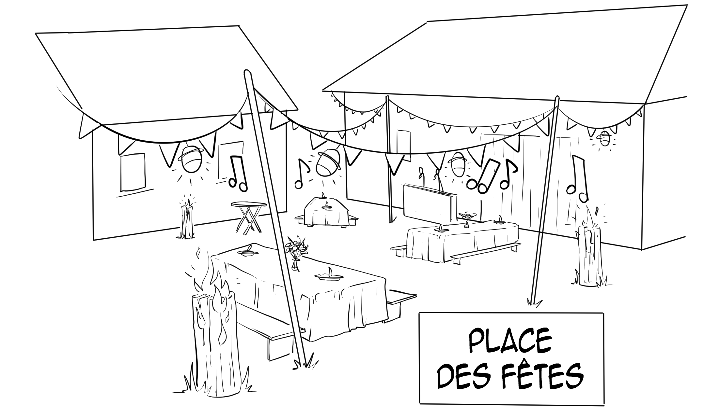

L'esprit Guinguette 🏮
Quand le travail des champs s'apaise et que le soleil commence à se coucher sur Chevronsart, la Place des Fêtes s'éveille ! C'est ici, sous les guirlandes lumineuses et en plein air, que nous organisons nos fameuses guinguettes.
De grandes tablées en bois, une atmosphère chaleureuse et décontractée : tout est pensé pour vous offrir un moment de déconnexion totale en famille ou entre amis, au cœur de notre écosystème.
Soirées et animations 🎶
La ferme n'est pas qu'un lieu de production agricole, c'est un véritable lieu de vie et de culture ! Tout au long de la belle saison, la Place des Fêtes accueille un programme riche et varié.
- Concerts locaux : Des petits groupes de musique viennent faire vibrer la scène pour des soirées dansantes.
- Animations : Des jeux en bois, des ateliers ludiques pour les enfants et des spectacles de rue.
- Repas festifs : Des banquets géants où nos viandes grillées et nos légumes de saison sont à l'honneur.
Célébrer notre communauté 🍻
Faire vivre un modèle agroécologique et coopératif, c'est aussi savoir célébrer ensemble le travail accompli et les récoltes abondantes.
Cet espace est le point de rencontre privilégié entre l'équipe de la ferme, les coopérateurs, les wwoofeurs de passage et les habitants de la région. Autour d'un bon verre de bière artisanale ou d'un jus de pomme maison, on refait le monde et on cultive ce lien social qui nous est si cher !